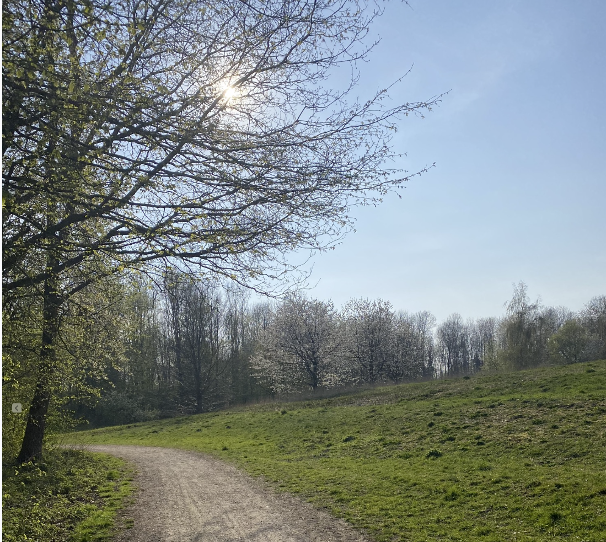

Begin at the main entrance sign and follow the clear path lines that border
lawns and gentle water edges. Keep to the right side on narrow sections and
pass others politely. New cyclists or skaters can choose
quieter hours to practise short laps and build
confidence at their own pace.
Enjoy the park with your dog
If you bring a dog, keep it close and use the bins provided along the route.
Try completing the same loop at sunrise and again at sunset to enjoy the
changing light and soothing sounds. Many families like to time their laps and watch
small improvements week after week.
Explore the routes of Beatrix Park
Visiting Beatrix Park is a refreshing experience for anyone who enjoys open green spaces and calm surroundings.
From the main entrance, a broad path guides you toward the central pond, where ducks and swans gather in the mornings.
You can follow the east loop that circles the water and passes through flowering borders, or take the woodland route on the west side for a quieter walk under tall trees.
Cyclists often prefer the N–S path, which runs smoothly between trimmed hedges and small bridges.
Benches are placed along every route, inviting visitors to pause and enjoy the peaceful atmosphere before continuing their journey through this charming park.

Beatrix Park walking paths
Walking route
Beatrix Park walking route map
The walking route is a gentle 1.2 km loop that takes you around the park’s main features, offering a refreshing blend of nature and tranquility.
Starting from the main entrance, you’ll pass by open lawns, colourful flower beds, and the shimmering central pond where ducks and swans gather in the mornings.
The path is fully paved and well-maintained, making it suitable for strollers, wheelchairs, and casual walkers alike.
Along the way, several benches invite you to pause, breathe, and enjoy the subtle sounds of rustling leaves and birdsong.
The route winds gently through shady trees and open spaces, connecting to side paths for those who wish to explore further.
It’s a perfect choice for families with children, early joggers, or anyone seeking a peaceful stroll in a beautifully cared-for green environment.
Explore the park routes
Family Walk
The Family Walk follows gentle paths that loop around the central lawns and ponds.
It’s perfect for slow strolls, photo breaks, and easy chats along the way.
Benches and open views make it ideal for families with children or grandparents
looking for a calm outing.
The Biking Route offers smooth paved surfaces with wide curves and
gentle slopes. Cyclists can enjoy steady rides through tree-lined paths and quiet corners.
Morning rides are best for fresh air and low traffic, while the evening light
adds a golden glow across the open fields.
The Skate Route features long straight paths and smooth turns, making it a
favourite loop for roller-skaters and skateboarders.
Avoid wet days for safety, and enjoy the rhythm of your wheels as you pass
shady edges and reflections on the pond.
It’s a fun way to stay active and explore the park’s scenery.